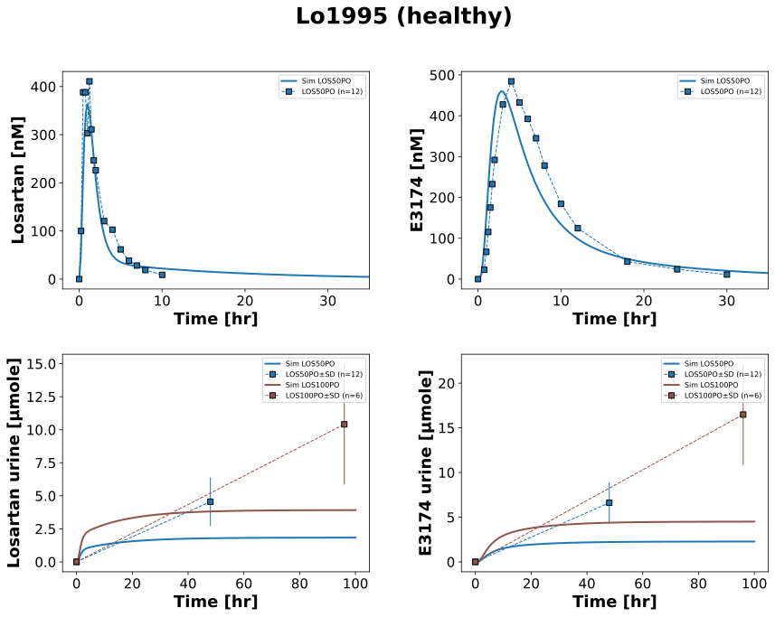

Lo1995
Models
Datasets
- exp3174_LOS20IV: Lo1995_exp3174_LOS20IV.tsv
- exp3174_LOS50PO: Lo1995_exp3174_LOS50PO.tsv
- losartan_LOS20IV: Lo1995_losartan_LOS20IV.tsv
- losartan_LOS50PO: Lo1995_losartan_LOS50PO.tsv
- exp3174_E20IV: Lo1995_exp3174_E20IV.tsv
- exp3174_LOS30IV: Lo1995_exp3174_LOS30IV.tsv
- losartan_LOS30IV: Lo1995_losartan_LOS30IV.tsv
- exp3174_urine_LOS20IV: Lo1995_exp3174_urine_LOS20IV.tsv
- exp3174_urine_LOS50PO: Lo1995_exp3174_urine_LOS50PO.tsv
- losartan_urine_LOS20IV: Lo1995_losartan_urine_LOS20IV.tsv
- losartan_urine_LOS50PO: Lo1995_losartan_urine_LOS50PO.tsv
- recovery_exp3174_LOS20IV: Lo1995_recovery_exp3174_LOS20IV.tsv
- recovery_exp3174_LOS50PO: Lo1995_recovery_exp3174_LOS50PO.tsv
- recovery_losartan_LOS20IV: Lo1995_recovery_losartan_LOS20IV.tsv
- recovery_losartan_LOS50PO: Lo1995_recovery_losartan_LOS50PO.tsv
- exp3174_urine_LOS100PO: Lo1995_exp3174_urine_LOS100PO.tsv
- exp3174_urine_LOS30IV: Lo1995_exp3174_urine_LOS30IV.tsv
- losartan_urine_LOS100PO: Lo1995_losartan_urine_LOS100PO.tsv
- losartan_urine_LOS30IV: Lo1995_losartan_urine_LOS30IV.tsv
- recovery_exp3174_LOS100PO: Lo1995_recovery_exp3174_LOS100PO.tsv
- recovery_exp3174_LOS30IV: Lo1995_recovery_exp3174_LOS30IV.tsv
- recovery_losartan_LOS100PO: Lo1995_recovery_losartan_LOS100PO.tsv
- recovery_losartan_LOS30IV: Lo1995_recovery_losartan_LOS30IV.tsv
- exp3174_urine_E20IV: Lo1995_exp3174_urine_E20IV.tsv
- recovery_exp3174_E20IV: Lo1995_recovery_exp3174_E20IV.tsv
Figures
- Fig_LOSIV: Lo1995_Fig_LOSIV.svg
- Fig_LOSPO: Lo1995_Fig_LOSPO.svg
- Fig_E3174IV: Lo1995_Fig_E3174IV.svg
{kind=link}
{kind=link}
Fig_LOSIV
Fig_LOSPO
|  |
Fig_E3174IV

|
Code
../../../../experiments/studies/lo1995.py
from tokenize import group
from typing import Dict
from sbmlsim.data import DataSet, load_pkdb_dataframe
from sbmlsim.fit import FitMapping, FitData
from sbmlutils.console import console
from pkdb_models.models.losartan.experiments.base_experiment import (
LosartanSimulationExperiment,
)
from pkdb_models.models.losartan.experiments.metadata import (
Tissue, Route, Dosing, ApplicationForm, Health, \
Fasting, LosartanMappingMetaData, Coadministration, Genotype,
)
from sbmlsim.plot import Axis, Figure
from sbmlsim.simulation import Timecourse, TimecourseSim
from pkdb_models.models.losartan.helpers import run_experiments
class Lo1995(LosartanSimulationExperiment):
"""Simulation experiment of Lo1995."""
info_dict = {
"LOS50PO": {
"[Cve_los]": "losartan",
"[Cve_e3174]": "exp3174",
"Aurine_los": "losartan_urine",
"Aurine_e3174": "exp3174_urine",
},
"LOS20IV": {
"[Cve_los]": "losartan",
"[Cve_e3174]": "exp3174",
"Aurine_los": "losartan_urine",
"Aurine_e3174": "exp3174_urine",
},
"LOS30IV": {
"[Cve_los]": "losartan",
"[Cve_e3174]": "exp3174",
"Aurine_los": "losartan_urine",
"Aurine_e3174": "exp3174_urine",
},
"E20IV": {
"[Cve_e3174]": "exp3174",
"Aurine_e3174": "exp3174_urine",
},
"LOS100PO": {
"Aurine_los": "losartan_urine",
"Aurine_e3174": "exp3174_urine",
},
}
interventions = list(info_dict.keys())
doses = {
"LOS50PO": 50,
"LOS20IV": 20,
"LOS30IV": 30,
"E20IV": 20,
"LOS100PO": 100,
}
routes = {
"LOS50PO": "PO",
"LOS20IV": "IV",
"LOS30IV": "IV",
"E20IV": "IV",
"LOS100PO": "PO",
}
colors = {
"LOS50PO": "tab:blue",
"LOS20IV": "tab:orange",
"LOS30IV": "tab:red",
"E20IV": "tab:green",
"LOS100PO": "tab:brown",
}
studies = {
"LOS50PO": "study1",
"LOS20IV": "study1",
"LOS30IV": "study2",
"E20IV": "study2",
"LOS100PO": "study2",
}
bodyweights = {
"study1": 75.6,
"study2": 78.6,
}
def datasets(self) -> Dict[str, DataSet]:
dsets = {}
for fig_id in ["Fig1", "Fig2", "Tab1B", "Tab2B", "Tab3B"]:
df = load_pkdb_dataframe(f"{self.sid}_{fig_id}", data_path=self.data_path)
for label, df_label in df.groupby("label"):
dset = DataSet.from_df(df_label, self.ureg)
# unit conversion to mole/l
if fig_id in {"Fig1", "Fig2"}:
if label.startswith("losartan_"):
dset.unit_conversion("mean", 1 / self.Mr.los)
elif label.startswith("exp3174_"):
dset.unit_conversion("mean", 1 / self.Mr.e3174)
dsets[f"{label}"] = dset
# console.print(dsets)
# console.print(dsets.keys())
return dsets
def simulations(self) -> Dict[str, TimecourseSim]:
Q_ = self.Q_
tcsims = {}
for intervention in self.interventions:
dose = self.doses[intervention]
route = self.routes[intervention]
substance = "los" if intervention.startswith("LOS") else "e3174"
study = self.studies[intervention]
if substance == "los":
dose = (dose * self.Mr.los / self.Mr.losp).magnitude
if route == "PO":
# losartan potassium
tcsims[f"{intervention}"] = TimecourseSim(
[Timecourse(
start=0,
end=100 * 60, # [min]
steps=500,
changes={
**self.default_changes(),
"BW": Q_(self.bodyweights[study], "kg"),
f"PODOSE_{substance}": Q_(dose, "mg"),
},
)]
)
else:
tcsims[f"{intervention}"] = TimecourseSim(
[Timecourse(
start=0,
end=20, # [min]
steps=500,
changes={
**self.default_changes(),
"BW": Q_(self.bodyweights[study], "kg"),
f"Ri_{substance}": Q_(dose, "mg")/Q_(20, "min"),
},
),
Timecourse(
start=0,
end=100 * 60 - 20, # [min]
steps=2000,
changes={
"BW": Q_(self.bodyweights[study], "kg"),
f"Ri_{substance}": Q_(0, "mg/min"),
},
)
]
)
return tcsims
def fit_mappings(self) -> Dict[str, FitMapping]:
mappings = {}
for intervention in self.interventions:
route = self.routes[intervention]
for sid, name in self.info_dict[intervention].items():
mappings[f"fm_{name}_{intervention}"] = FitMapping(
self,
reference=FitData(
self,
dataset=f"{name}_{intervention}",
xid="time",
yid="mean",
yid_sd="mean_sd" if "urine" in name else None,
count="count",
),
observable=FitData(
self, task=f"task_{intervention}", xid="time", yid=sid,
),
metadata=LosartanMappingMetaData(
tissue=Tissue.PLASMA,
route=Route.PO if route == "PO" else Route.IV,
application_form=ApplicationForm.TABLET if route == "PO" else ApplicationForm.SOLUTION,
dosing=Dosing.SINGLE,
health=Health.HEALTHY,
fasting=Fasting.FASTED,
coadministration=Coadministration.NONE,
genotype=Genotype.NR,
),
)
return mappings
def figures(self) -> Dict[str, Figure]:
return {
**self.fig_LOSIV(),
**self.fig_LOSPO(),
**self.fig_E3174IV(),
}
def fig_LOSIV(self) -> Dict[str, Figure]:
fig = Figure(
experiment=self,
sid="Fig_LOSIV",
num_rows=2,
num_cols=2,
name=f"{self.__class__.__name__} (healthy)",
)
plots = fig.create_plots(
xaxis=Axis(self.label_time, unit=self.unit_time), legend=True
)
plots[0].set_yaxis(self.label_los, unit=self.unit_los)
plots[1].set_yaxis(self.label_e3174, unit=self.unit_e3174)
plots[2].set_yaxis(self.label_los_urine, unit=self.unit_los_urine)
plots[3].set_yaxis(self.label_e3174_urine, unit=self.unit_e3174_urine)
for k in [0, 1]:
plots[k].xaxis.min = -2
plots[k].xaxis.max = 35
for intervention in ["LOS20IV", "LOS30IV"]:
for k, sid in enumerate(self.info_dict[intervention]):
name = self.info_dict[intervention][sid]
# simulation
plots[k].add_data(
task=f"task_{intervention}",
xid="time",
yid=sid,
label=f"Sim {intervention}",
color=self.colors[intervention]
)
# data
plots[k].add_data(
dataset=f"{name}_{intervention}",
xid="time",
yid="mean",
yid_sd="mean_sd" if "urine" in name else None,
count="count",
label=f"{intervention}",
color=self.colors[intervention]
)
return {
fig.sid: fig,
}
def fig_LOSPO(self) -> Dict[str, Figure]:
fig = Figure(
experiment=self,
sid="Fig_LOSPO",
num_rows=2,
num_cols=2,
name=f"{self.__class__.__name__} (healthy)",
)
plots = fig.create_plots(
xaxis=Axis(self.label_time, unit=self.unit_time), legend=True
)
plots[0].set_yaxis(self.label_los, unit=self.unit_los)
plots[1].set_yaxis(self.label_e3174, unit=self.unit_e3174)
plots[2].set_yaxis(self.label_los_urine, unit=self.unit_los_urine)
plots[3].set_yaxis(self.label_e3174_urine, unit=self.unit_e3174_urine)
for k in [0, 1]:
plots[k].xaxis.min = -2
plots[k].xaxis.max = 35
for intervention in ["LOS50PO", "LOS100PO"]:
for k, sid in enumerate(self.info_dict[intervention]):
if intervention == "LOS100PO":
k += 2
name = self.info_dict[intervention][sid]
# simulation
plots[k].add_data(
task=f"task_{intervention}",
xid="time",
yid=sid,
label=f"Sim {intervention}",
color=self.colors[intervention]
)
# data
plots[k].add_data(
dataset=f"{name}_{intervention}",
xid="time",
yid="mean",
yid_sd="mean_sd" if "urine" in name else None,
count="count",
label=f"{intervention}",
color=self.colors[intervention]
)
return {
fig.sid: fig,
}
def fig_E3174IV(self) -> Dict[str, Figure]:
fig = Figure(
experiment=self,
sid="Fig_E3174IV",
num_rows=2,
name=f"{self.__class__.__name__} (healthy)",
)
plots = fig.create_plots(
xaxis=Axis(self.label_time, unit=self.unit_time), legend=True
)
plots[0].set_yaxis(self.label_e3174, unit=self.unit_e3174)
plots[1].set_yaxis(self.label_e3174_urine, unit=self.unit_e3174_urine)
plots[0].xaxis.min = -2
plots[0].xaxis.max = 35
intervention = "E20IV"
for k, sid in enumerate(self.info_dict[intervention]):
name = self.info_dict[intervention][sid]
# simulation
plots[k].add_data(
task=f"task_{intervention}",
xid="time",
yid=sid,
label=f"Sim {intervention}",
color=self.colors[intervention]
)
# data
plots[k].add_data(
dataset=f"{name}_{intervention}",
xid="time",
yid="mean",
yid_sd="mean_sd" if "urine" in name else None,
count="count",
label=f"{intervention}",
color=self.colors[intervention]
)
return {
fig.sid: fig,
}
if __name__ == "__main__":
run_experiments(Lo1995, output_dir=Lo1995.__name__)